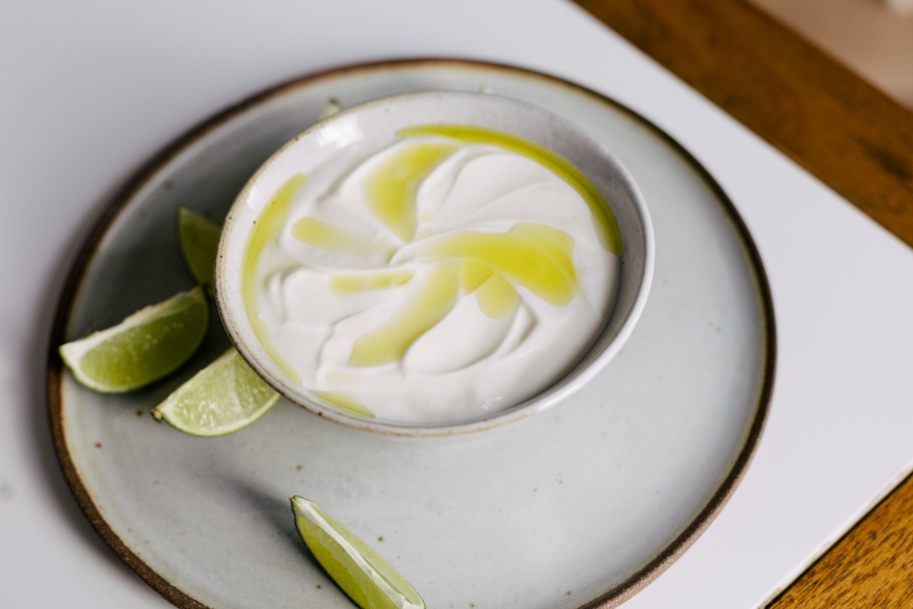

Coalhada

A coalhada é um alimento lácteo que é produzido a partir do leite. Tem alto valor alimentício. O soro produzido pela fermentação do leite pode ser reutilizado.
- Leite - de preferência natural retirado da vaca
- Fermente, vinagre ou limão
- Ferver o leite
- Esperar o leite esfriar
- Talhar um pouco do leite, para obter o soro o ingrediente que irá talhar o leite pode ser qualquer um dos 3, contudo caso você tenha o soro de outra coalhada, é possível pular esse item
- Pôr uma colher de sopa de soro para cada litro de leite
- Colocar coalhada pra descansar fora da geladeira, tampe o recipiente com um pano de prato